Overview
This document is designed to help users use the Vehicle Editor to create working in-game vehicles and tweak vehicle properties like movement, effects, and ammunition.
Starting from an asset file, users can create working in-game vehicles without coding/scripting intervention.
Many element descriptions can be found in the Scripts/Entities/Vehicles/def_vehicle.xml file so make sure to have a read through that for further information.
Editing a Vehicle
Select any vehicle entity in a level. Open the Vehicle Editor via View -> Open View Pane -> Vehicle Editor. In the Editor click Open Selected.
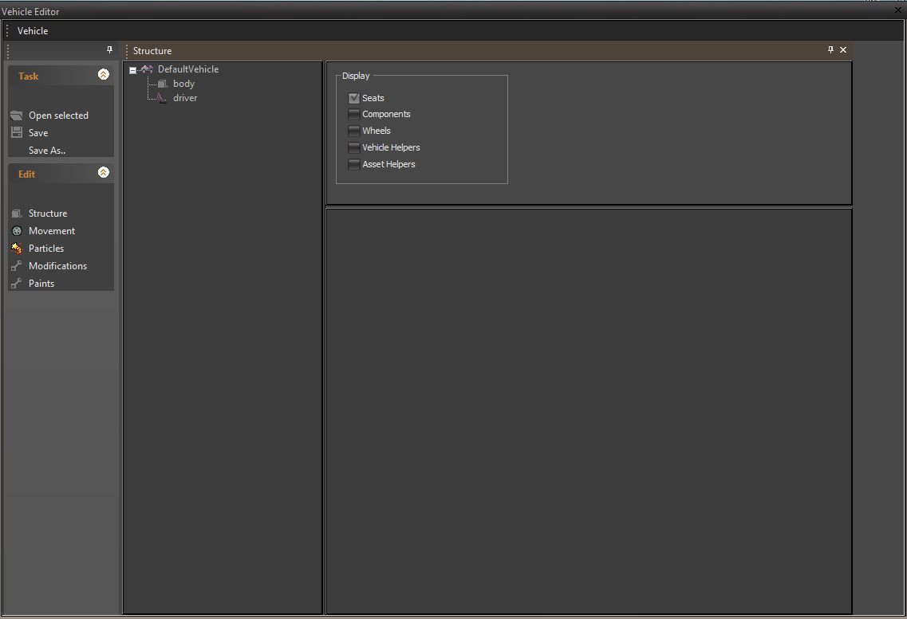
Creating a New Vehicle
For starting with a nearly empty vehicle, drag the DefaultVehicle into your level. You'll see it only consists of the a default placeholder object.
In many cases it may be quicker to use an existing vehicle as a start, e.g. use a 4-wheeled vehicle as base for creating another 4-wheeled vehicle.
First use Vehicle -> Save As from the menu bar. The filename you choose determines the entity class name of the new vehicle.
To make the new entity class available, you should now restart the Editor or else you will still be working on the old (existing) vehicle class.
Components of the Vehicle Editor
- The Movement Panel contains all movement-related properties. It's used to select a MovementType and to set up its properties.
- The Structure Panel shows a tree view of the vehicle's structure. Often it consists of a main part (chassis or hull) and optional parts like turrets and weapons. Also Seats and Damage components are edited here.
- The Effects Panel is used for selecting and setting up particle effects. Currently this includes Exhaust particles and Damage effects.
Editing Movement Parameters
The Movement panel offers a box for choosing the movement type. Each type has its specific set of properties. Tool tips give a short explanation of each property.
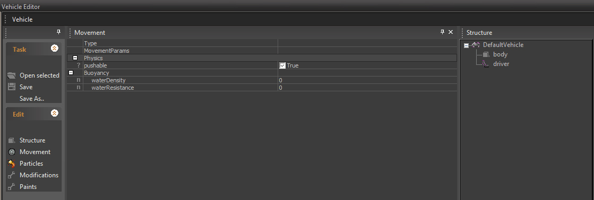
Click Save after editing, switch to game mode and test-drive your vehicle.
Some movement types won't work immediately, like the types "StdWheeled" and "Tank", that need wheels added first (see Editing Structure).
Editing Structure
The Structure Panel shows a tree view of the vehicle's structure. The root is the vehicle itself.
Parts are identified in the tree view by small grey boxes. You can add parts to the vehicle or to other parts using the context menu. Note that you only need to create parts for things that shall have certain abilities and therefore properties to set up.
Examples are:
- Turrets/Cannons/Mounted Weapons
- Wheels/Tracks
- Mass boxes
- Headlights
- ...
A part always moves relative to its parent. So, if you want to create a tank-like vehicle, you would first attach a part for the turret to the vehicle and make it able to rotate left/right using the yawLimits property.
Now add another part, this time to the turret, call it 'cannon', and make it able to rotate up/down using the pitchLimits property.
Parts Classes
Each part has a class assigned. Part classes are used to provide special functionality and can have additional properties. Currently used classes are:
Property | Description |
|---|---|
Animated | Use this for CGAs that include animations. |
SubPart | A child of an Animated part. The name of this part specifies which sub-object inside the Animated CGA it refers to. |
SubPartWheel | A wheel (also as sub-object of an Animated CGA part). |
Static | Used for static parts, typically from CGF. |
Tread | Used for tank treads. |
Light | A headlight. |
MassBox | A box-shaped part without rendered geometry for tweaking mass distribution. |
Common Parts Properties
Property | Description |
|---|---|
StateLevels | Used to specify a geometry for this part. The first stateLevel is the default one and has an empty name. The 'filename'_attribute contains the asset that's loaded for this part. If the part should only use a subgeometry inside this asset file, the optional _'geometry'_attribute can be used to specify it. The main part of the vehicle (chassis/hull..) usually contains the vehicle main asset file here. An optional 2nd stateLevel called _'destroyed' can be used to specify the destroyed model (for this part), which will replace the 1st stateLevel upon vehicle (or part) destruction. |
Mass | The mass (in kg) of this part. Several vehicles use a single box-shaped part called _'mass'_that specifies the vehicle mass, but you can also assign mass to other parts. Note that for tweaking, a mass-box part is recommended as it can be freely moved and scaled. |
Helper | Especially for external parts that are not included in the vehicle asset file (e.g. a rocket launcher mounted somewhere), a helper can be specified to position this part. |
DisableCollision | Disables all collisions for this part, but leaves it physicalized as rigid body. Used e.g. for mass boxes. |
DisablePhysics | Disables physicalization of this part. |
IsHidden | For development purposes mainly, can be used to disable rendering of this part. |
YawSpeed/PitchSpeed | Rotation speed and limits (in degrees) for this part. To be able to rotate, either yawSpeed or pitchSpeed must be greater than 0. Arcs are displayed when limits are different from zero. |
SubPart Wheel Properties
Property | Description |
|---|---|
Axle | Index of the axle, counted from the vehicles front, starting from 0. |
CanBrake | If true, this wheel is affected by the handbrake. |
Density | Wheels physical density (water: 1000). |
Damping | Damping of the suspension. |
Driving | If true, this wheel is powered. |
LenMax | Maximum (stretched) suspension length. |
SuspLength | Initial length of suspension (smaller than lenMax). |
MaxFriction | Max wheel friction. |
MinFriction | Min wheel friction. |
Stiffness | Suspension stiffness. If 0, it's calculated from suspension lengths. |
SurfaceId | If set, surface type of wheel material is overridden with this ID. |
The Wheel Master
For easier setup of common wheel properties, the Wheel Master Dialog is available.
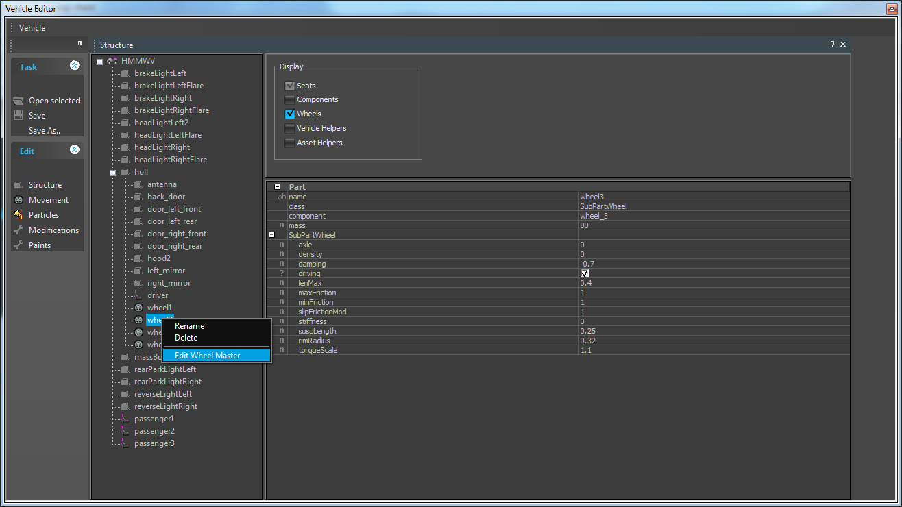
- Right-click on any of the wheels then select "Edit Wheel Master" to open the dialog.
- Use the check boxes to select which wheel properties you want to update (only active ones are saved).
- Select to which wheels the new settings should be applied.
- Hit "Apply to Wheels".
Selecting the desired properties (and the desired wheels) only, allows you to preserve other settings (that may vary between wheels) and that you don't want to overwrite.
As an example, the dialog below is used to update the minFriction and maxFriction of wheels 1 and 2.
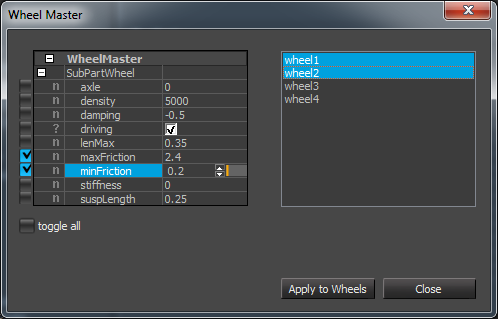
MassBox Editing
Mass boxes can be used to get a symmetrical mass distribution if desired (in contrast to the distribution that's automatically computed according to the mesh otherwise).
This allows easy tweaking of Center of Gravity and Inertia, what's quite fundamental for e.g. wheeled vehicles behavior.
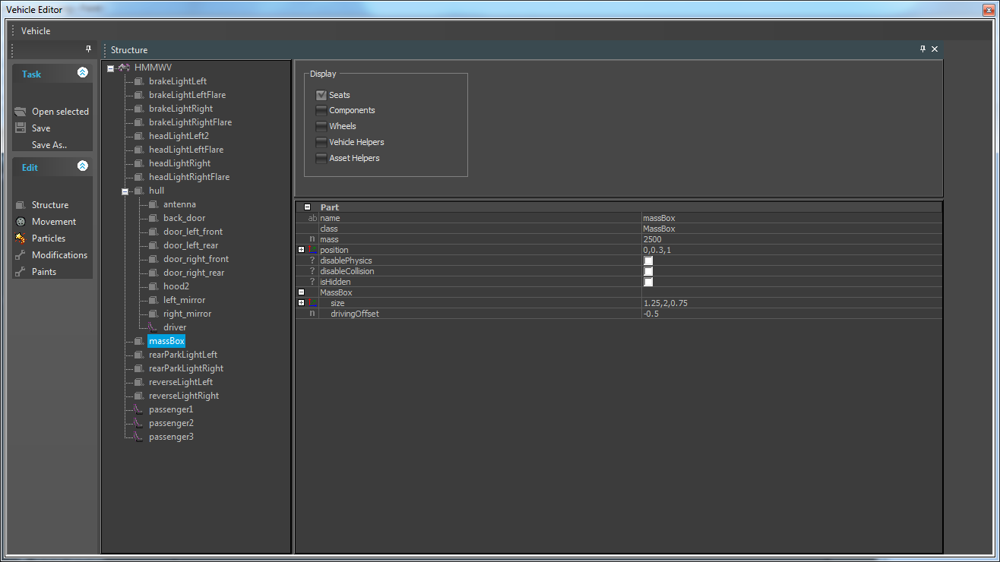
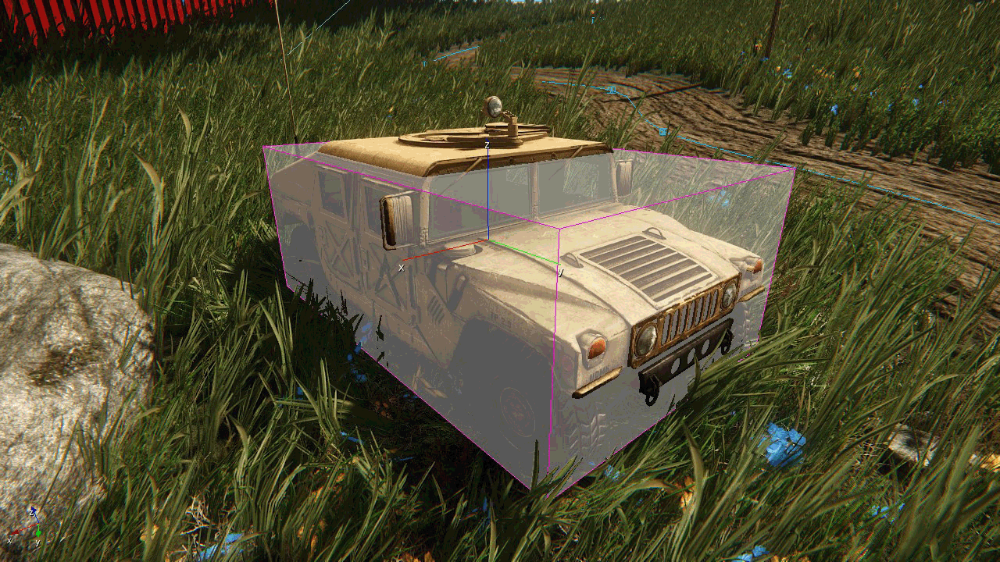
Helpers
Helpers are small objects specifying a position and a direction in vehicle (or part) coordinate space. In the tree view, they are identified by small boxes with a 'H' in them.
In the main window, they are displayed as small yellow boxes. They are only displayed if the box "Vehicle Helpers" on the Parts Panel is checked.
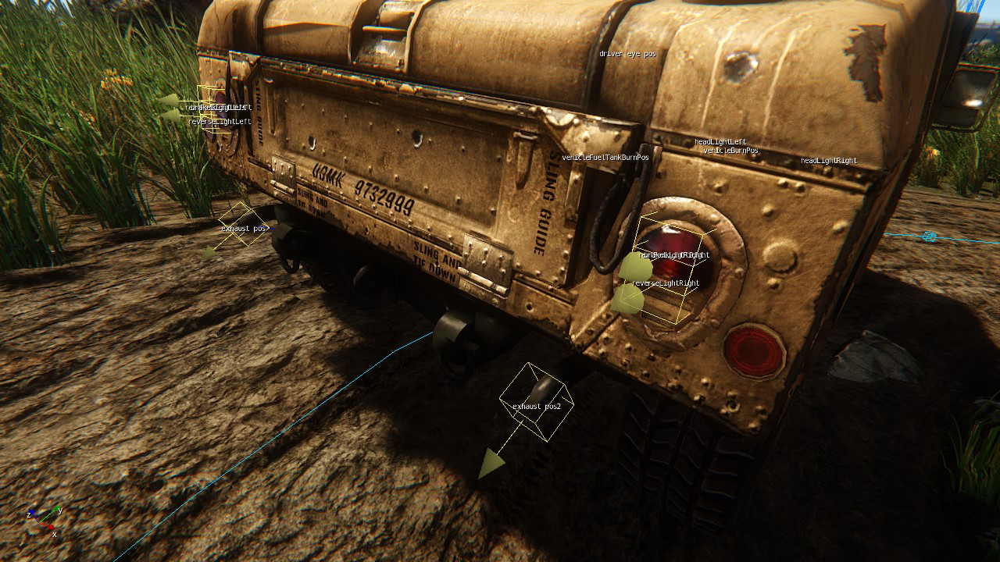
Helpers are used everywhere where a user-supplied position/direction is needed, e.g. for seat & view positions, weapon positions, effect locations, and more.
You can add Helpers to parts using the context menu. Helpers will always move with the part they are attached to.
Seats
The tree view is also used to edit seats. A seat can be added to the vehicle itself or to one of its parts. That's useful for e.g. gunner seats that should move together with a tank turret.
Common Seat Properties
- name can be whatever you choose, it's used mainly for identification by the user.
- isDriver determines if the player on this seat can drive the vehicle.
- The helper fields specify positions that are used for entering, sitting in, viewing from and exiting a seat:
- enterHelper is the position that AI guys will try to reach when they want to enter this seat.
- exitHelper is optional and only needed if the exit position should be different from the enter position.
- sitHelper is the where the player model is placed during sitting in the seat.
- The views array contains the available views the player has in this seat. By default, there are GhostPit and Thirdperson:
- For Ghostpit view, the view position is by default placed 0.6m above the sitHelper. If you need to change this position, (e.g. for the inside of tanks or for general tweaking), specify a helper name in the view parameters. The camera will be placed at this helper's position (see e.g. the Jeep for an example). The canRotate checkbox allows/disallows view rotation.
- For Thirdperson view, you can specify the camera distance from the vehicle and an optional heightOffset, if desired. The canRotate checkbox allows/disallows view rotation.
- AimPart is an optional part that the view in this seat will follow (in 3rd person). Used e.g. for tank cannons or mounted guns. AI uses it for getting view direction of AI passengers.
- ActionParts is a list of parts that the users input actions will be forwarded to. Currently that's needed for every part that should e.g. rotate when the user moves the mouse, or that should receive keyboard input from this seat (e.g. Headlights want to receive the activation key when the driver seat presses it). You can add ActionParts with right-clicking the property item.
Weapons
Weapons are added to a Seat using the context menu. This seat's passenger will be the operator of the weapon. The class property determines the weapon type and contains a list of mountable vehicle weapons.
The Helpers array determines one or more Helpers for specifying the firing position(s). The firing position rotates through the Helpers list for every consecutive shot, what can be used for weapons like multiple rocket launchers.
You can add Helpers with right-clicking the property item. The helpers you specify here should of course be attached to the corresponding part you want the weapon to move with, e.g. the tank cannon.
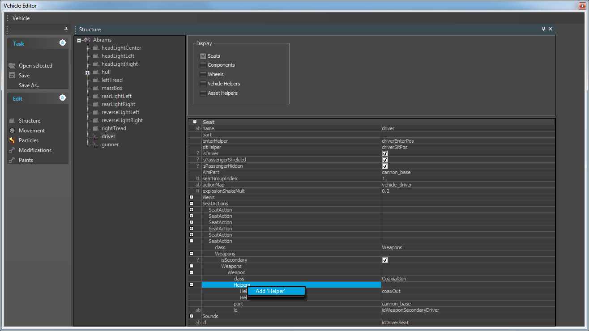
Currently primary weapons are supported, secondary will follow. You can have several primary weapons on one seat! The weapons will be fired consecutively (e.g. alternate between left and right rocketlauncher on a Helicopter).
While this effect could also be achieved with using Helpers, several weapons enable the damage system to damage (and take them out) independently.
All further weapon properties are determined by the Weapon entity and the Ammo type. [Upcoming: Ammunition setup for the vehicle].
Damage Components
A damage component is specified by a name, an amount of damage points it can take and an axis-aligned bounding box:
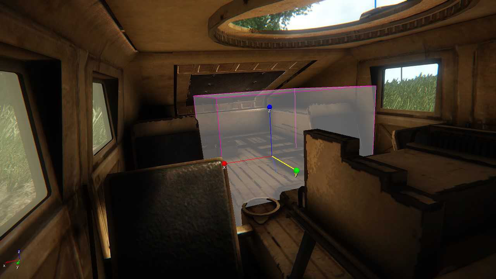
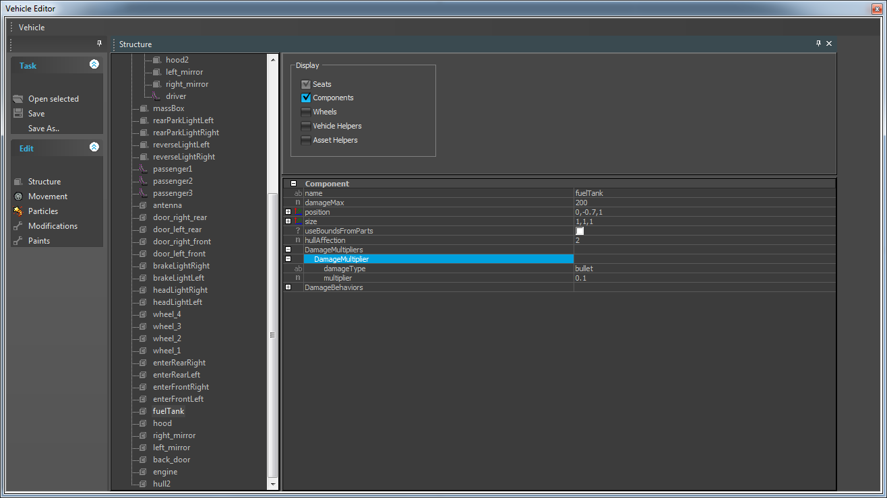
Whenever the vehicle gets hit, the component(s) which bounding box(es) include the hit position receive damage. As damage on a component rises towards its maximum, predefined DamageBehaviors can be triggered (e.g. a particle effect, sound, change in handling, or finally, an explosion).
Examples for usage are:
- Trigger a smoke effect when the engine is damaged by e.g. 50%
- Assign a low damage threshold to a fuel tank and trigger vehicle explosion upon destruction.
- Change the movement behaviour when a tire gets destroyed (given code supports it).
Handling of components in the Editor is similar to Parts: Right-click on the vehicle in the treeview to add a component (make sure the "Components" check box is toggled to see them). A component features these properties: - name: can be freely chosen to identify the component.
- damageMax: the maximum of hitpoints the component can take.
- minBound, maxBound: bounding box min and max positions. A value of 0,0,0 for both bounds means that the entire vehicle bounding box is used.
- useBoundsFromParts: when this is active, the component bbox is calculated from the parts that belong to this component (see component property in Parts).
- DamageBehaviors: An arbitrary number of DamageBehaviors.
When a component is selected in the tree view, it's bounding box is displayed in the Editor. By default, the vehicle bounding box is used. Use the editor to move and scale the bbox. If you want to use the bounding box from the part(s) that belong to the component (e.g. for a wheel), select the useBoundsFromParts flag. (Note: in this case, currently the bbox is not displayed, hopefully this can be fixed soon)
In order for something to happen when the component receives damage, you have to add DamageBehaviors to the component. Right-click on the DamageBehaviors property item to do this. Currently the following classes of DamageBehaviors are available (wip):
- Destroy: destroys the vehicle (just destruction, no further effect).
- Effect: spawns a particle effect. The name specified here must be available in the DamageEffects list on the Particles panel (see below).
- Impulse: applies an impulse to the vehicle. The amount is randomized between forceMin and forceMax.
- MovementNotification: passes a damage event to the movement, typically used with the engine component(s). It depends on the movement code what influence the damage event will have. For example, the wheeled vehicles currently will lose engine power as engine damage rises.
- Sink: Changes buoyancy to e.g. make boats sink to a certain degree.
These DamageBehavior classes share the following common properties: - damageRatioMin: the minimum damage ratio before this behavior is triggered (defaults to 1, 100% damage).
- damageRatioMax: the maximum damage ratio up to what this behavior is triggered (defaults to 0, ie. no maximum).
Editing Effects
Exhaust Particles
This is intended for creating exhausts, jet turbines, etc. The Helpers array is used to specify one or more helpers, at whose position(s) the effect will be spawned.
Three exhaust effects are supported:
- Engine starting.
- Engine stopping.
- Engine running.
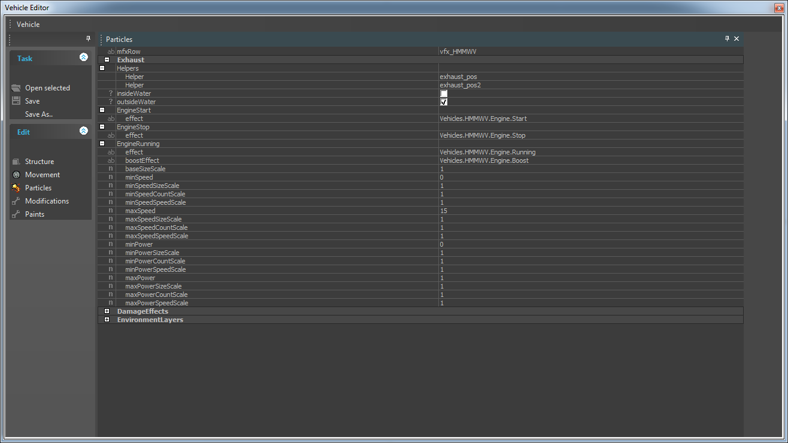
If you have a ParticleEffect entity in your level, you can right-click on the effect items to get the effect name from the entity without typing it manually.
Use Engine start/stop if you want to have a special effect (e.g. a large, dense exhaust cloud) for those events.
The EngineRunning effect usually will be continuous and is spawned as long as the current vehicle status adheres to the limits specified by the EngineRunning parameters.
Use them to alter the appearance depending on current speed and power (ie. engine load). Currently SizeScale and CountScale are exposed for dynamic adjustments, others can be added if needed.
Damage Effects
Here you can setup particle effects for usage by the Component Damage System. You can add an effect with right-clicking the "DamageEffects" category. Removing is possible with right-clicking the DamageEffect item to delete.
Parameter | Description |
|---|---|
Name | The name that you can later use in DamageBehaviors to reference this DamageEffect. |
Helper | The helper where the effect is spawned. |
Effect | The particle effect. If you have a ParticleEffect entity in your level, you can right-click on the effect item to get the effect name from the entity without typing it manually. |
ScaleMax | The effect is scaled with increasing damage up to this maximum at 100% damage. |
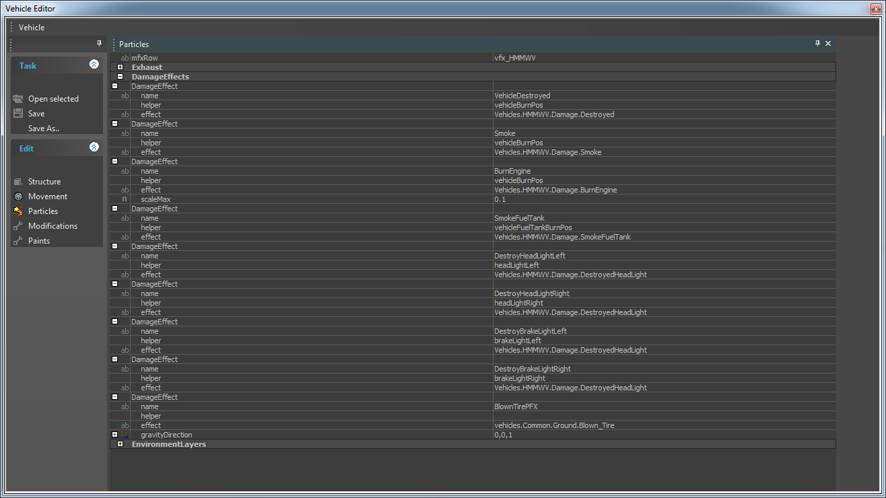